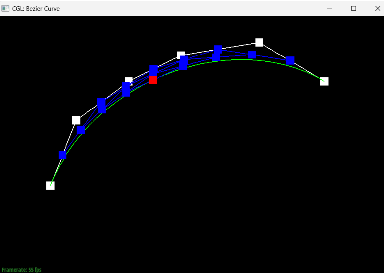
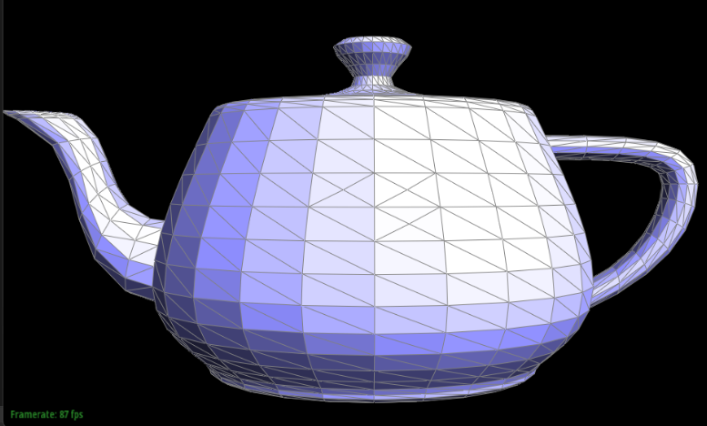
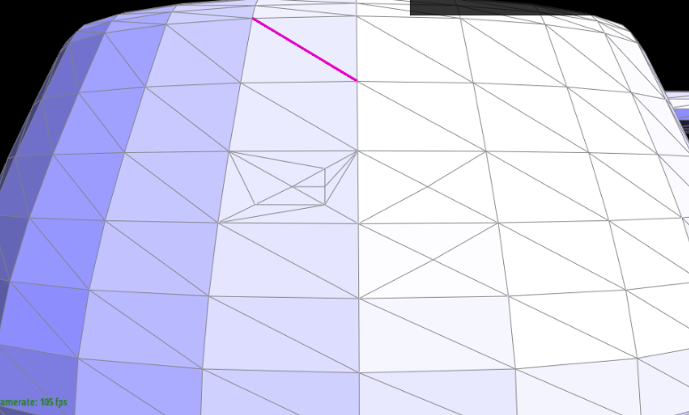
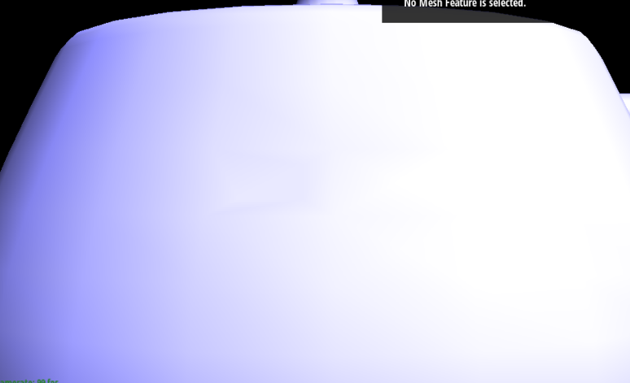

Overview
YOUR RESPONSE GOES HERE
Section I: Bezier Curves and Surfaces
Part 1: Bezier Curves with 1D de Casteljau Subdivision
Briefly explain de Casteljau's algorithm and how you implemented it in order to evaluate Bezier curves.At a timestep t in de Casteljau’s algorithm where we have n points, the algorithm takes pairs of consecutive points and generates the new point between the two at timestep t+1, providing us with a set of n-1 new points. For a list with an n number of points (length n), we know that we will have to execute the algorithm an n-1 number of times to get to the next time step since there are n-1 consecutive pairs of points; thus, our implementation of the algorithm included a for-loop that runs n-1 times, adding each new execute of the lerp to the end of a vector that we created to represent the next time step.
Take a look at the provided .bzc files and create your own Bezier curve with 6 control points of your choosing. Use this Bezier curve for your screenshots below.
Show screenshots of each step / level of the evaluation from the original control points down to the final evaluated point. Press E to step through. Toggle C to show the completed Bezier curve as well.
|
|
|
|
|
|
|
|

|
Show a screenshot of a slightly different Bezier curve by moving the original control points around and modifying the parameter \(t\) via mouse scrolling.
If we move a point and modify the t parameter, we can get something that looks like this:
Part 2: Bezier Surfaces with Separable 1D de Casteljau
Briefly explain how de Casteljau algorithm extends to Bezier surfaces and how you implemented it in order to evaluate Bezier surfaces.For Bezier surfaces, de Casteljau algorithm operates very similarly to the way it operates for Bezier curves, except now we’re working in a 3-dimensional space. Just like before, we have a for-loop that runs for the size of our points minus one number of times for evaluatingStep, which simulates one step. In evaluate1D, we fully evaluate the algorithm on a vector of points by running until the size of our points is equal to 1. Finally, evaluate calls upon evaluate1D with u in the for-loop to generate the final vector, then calls upon evaluate1D again with v to generate the final point.
Show a screenshot of bez/teapot.bez (not .dae) evaluated by your implementation.
Section II: Triangle Meshes and Half-Edge Data Structure
Part 3: Area-Weighted Vertex Normals
Briefly explain how you implemented the area-weighted vertex normals.We first initialize a new Vector3D object, summed_vector. Then, we enter a while loop that runs across all triangles centered around our halfedge’s vertex. For each triangle, we acquire two vectors and add the weighted cross product of the two onto our summed_vector. Finally, after running through all of the triangles, we return the normalized summed_vector at the very end. One fun thing to notice is that if we return summed_vector not normalized, then the resulting figure will seem as if it’s extremely bright (everything is a very bright white).
Show screenshots of dae/teapot.dae (not .bez) comparing teapot shading with and without vertex normals. Use Q to toggle default flat shading and Phong shading.
|
|

|
Part 4: Edge Flip
Briefly explain how you implemented the edge flip operation and describe any interesting implementation / debugging tricks you have used.The edge flip is implemented by first returning e0 if e0’s halfedge is a boundary. If it isn’t a boundary, then we assign pointers relating all of the elements of the initial setup of our e0: the halfedges, vertices, edges, and faces. Then, we take the flipped edge and remap all of the new relating elements, starting again with the halfedges (and reassigning their next(), twin(), vertex(), edge(), and face() pointers as we see necessary) and working through the vertices, edges, and faces (by reassigning their pointers to their halfedges).
Show screenshots of the teapot before and after some edge flips.
|
|
|
|
|
|
Write about your eventful debugging journey, if you have experienced one.
One problem we had was that the code would bug out if we reassigned pointers after the flip to something that it was already pointing to. The way we realized that this was the problem was by returning e0 at different points along the reassigning process, and once we got to a section that it would bug on, we could pinpoint the exact problem. We were also aided in the process of assigning the pointers by drawing out diagrams of what the figure should look like before and after the edge flipping.
Part 5: Edge Split
Briefly explain how you implemented the edge split operation and describe any interesting implementation / debugging tricks you have used.For splitting, we used the following reference image to base my coding on. We first took care of the boundary case where “e0” is on the boundary. Then, one trick that we used was that we had the halfedge, face, next, etc pointers to the original diagram and when we had to change some values to it, we would change those and comment out the ones that we did not change such that when we looked through the code to debug, it was easier to identify the errors.
Show screenshots of a mesh before and after some edge splits.
|

|

|

|
Show screenshots of a mesh before and after a combination of both edge splits and edge flips.
|
|
|
|
Write about your eventful debugging journey, if you have experienced one.
One debugging journey that we experienced was that we switched our reference picture in the middle of coding, but later on we realized that the two reference pictures had different face labels as well as some of the edge labels as well. After realizing this fact after a hard debugging process, we were able to fix the error quite quickly due to only using one reference picture instead of switching between two of them. One more bug that we found after running task 6 was that the diagram that we used somehow was erroring because once we removed the h6, h7, h8, and h9 which are twin edges of the boundary edges, we were able to mesh the polygons correctly. This was very difficult to figure out and we are still not too sure why that part is causing the error, but it took a lot of asking around, and a lot of trial and error.
If you have implemented support for boundary edges, show screenshots of your implementation properly handling split operations on boundary edges.
Not done.
Part 6: Loop Subdivision for Mesh Upsampling
Briefly explain how you implemented the loop subdivision and describe any interesting implementation / debugging tricks you have used.YOUR RESPONSE GOES HERE
Take some notes, as well as some screenshots, of your observations on how meshes behave after loop subdivision. What happens to sharp corners and edges? Can you reduce this effect by pre-splitting some edges?
YOUR RESPONSE GOES HERE
Load dae/cube.dae. Perform several iterations of loop subdivision on the cube. Notice that the cube becomes slightly asymmetric after repeated subdivisions. Can you pre-process the cube with edge flips and splits so that the cube subdivides symmetrically? Document these effects and explain why they occur. Also explain how your pre-processing helps alleviate the effects.
YOUR RESPONSE GOES HERE
If you have implemented any extra credit extensions, explain what you did and document how they work with screenshots.
YOUR RESPONSE GOES HERE
Part 7 (Optional, Possible Extra Credit)
Save your best polygon mesh as partsevenmodel.dae in your docs folder and show us a screenshot of the mesh in your write-up.YOUR RESPONSE GOES HERE
Include a series of screenshots showing your original mesh and your mesh after one and two rounds of subdivision. If you have used custom shaders, include screenshots of your mesh with those shaders applied as well.
YOUR RESPONSE GOES HERE
Describe what you have done to enhance your mesh beyond the simple humanoid mesh described in the tutorial.
YOUR RESPONSE GOES HERE